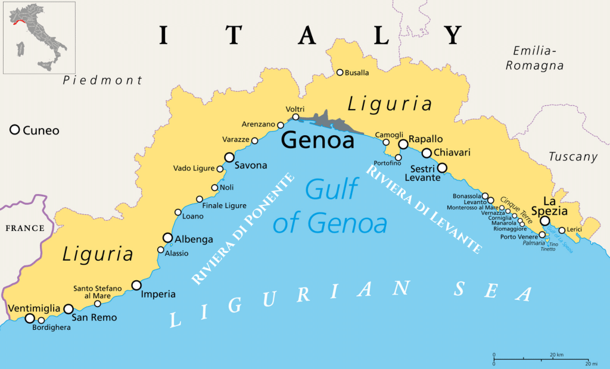
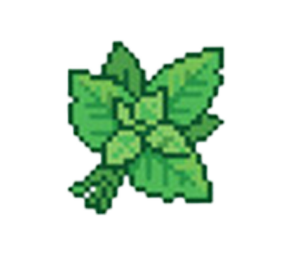
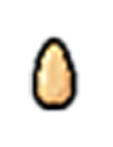
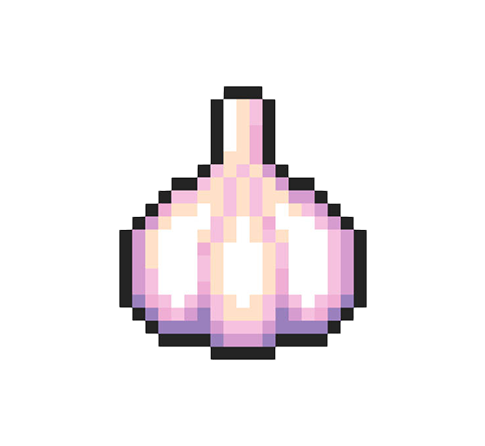
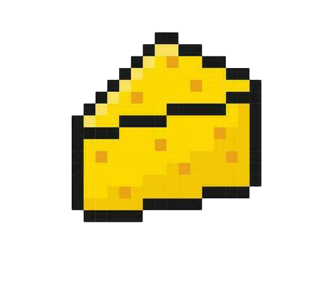
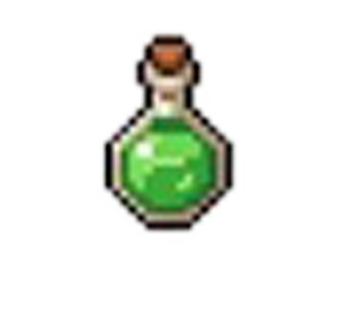
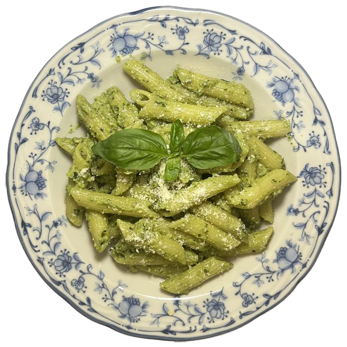

About
Pesto comes from Genoa, in the Liguria region of Italy. The name comes from the Italian word for crushing or pounding, because it was first made with a mortar and pestle.

This version uses a food processor. It keeps well in the fridge for a few days.
Ingredients
For the pesto

2 cups fresh basil leaves, packed

1/3 cup pine nuts

2 garlic cloves

1/2 cup grated Parmesan

1/2 cup extra virgin olive oilSalt and black pepper, to taste
1 teaspoon lemon juice (optional)
For the pasta
1 lb spaghetti, linguine, or trofie
Salt for the pasta water
Extra Parmesan for serving
Steps

- Bring a large pot of salted water to a boil.
- Toast the pine nuts in a dry pan over medium heat for 2 to 3 minutes, until golden. Watch them. They burn fast.
- Pulse the basil, pine nuts, and garlic in a food processor until finely chopped.
- With the processor running, slowly pour in the olive oil.
- Add the Parmesan, salt, pepper, and lemon juice. Pulse to combine.
- Cook the pasta until al dente. Save 1 cup of pasta water, then drain.
- Toss the pasta with the pesto. Add pasta water a splash at a time until the sauce coats the noodles.
- Serve with extra Parmesan.
Notes
Walnuts or almonds work in place of pine nuts.
Store leftover pesto in a jar with a thin layer of oil on top so it stays green.
Read more about pesto on Wikipedia.